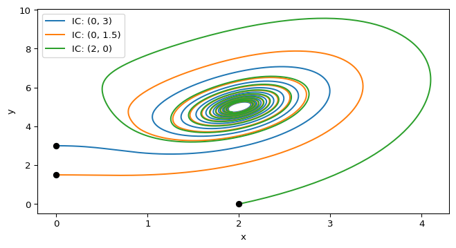

scipy.integrate.solve_ivp() and matplotlib.
Module 1: Low-Dimensional Dynamics
Build a full phase-plane analysis of the CDIMA model (this page, nullclines, stability), then the clickable parameter map that locates the Hopf point numerically.
The CDIMA model (chlorine dioxide-iodine-malonic acid reaction) is a two-variable chemical oscillator (lengyel1991modeling?; Strogatz 2024, sec. 8.3):
\[\begin{aligned} \dot x &= a - x - \frac{4xy}{1+x^2} \\ \dot y &= bx \left( 1 - \frac{y}{1+x^2} \right) \end{aligned} \tag{1}\]
where \(x\) and \(y\) are the dimensionless concentrations of I\(^-\) and ClO\(_2^-\). The parameters \(a, b > 0\) depend on the empirical rate constants and on the concentrations assumed for the slow reactants (Strogatz 2024, sec. 8.3).
From Hopf Bifurcation: for \(a = 10\) the Hopf point is \(b_c = 3.5\). With \(b = 4\), do you expect trajectories to converge to the fixed point \((2, 5)\) or to a limit cycle?
The fixed point is stable for \(b > b_c = 3a/5 - 25/a = 3.5\). With \(b = 4\) you are on the stable side, so trajectories should spiral into \((2, 5)\). The validation at the end of this page confirms it.
To understand the dynamics, we can analyze the phase plane. A phase plane is a 2D plot whose axes are the state variables (here, \(x\) and \(y\)). Each point \((x,y)\) represents the system’s state at a given time, and the differential equations define a vector field on this plane that indicates how the state evolves. Trajectories (solution curves) show how \((x(t),y(t))\) moves through the plane, revealing features such as equilibrium points, nullclines, limit cycles, and their stability.

scipy.integrate.solve_ivp() and matplotlib.
Generating this phase plane in Python is simple. We will follow the same approach as in 1D: define the right-hand side as a function, choose a time span and evaluation grid, and integrate with scipy.integrate.solve_ivp(). Follow the steps below.
Define the cdima() function for Equation 1. Remember that any ODE (in any dimension) can be written as:
def ode(t, state, *params):
# state represents the current values of the variables (e.g., x, y)
# params are any additional parameters needed to compute the derivatives
# each of them is separated by commas
return dstate_dt # this should be a sequence of the same length as `state`Write the cdima() function in this format.
def cdima(t: float, state: tuple[float, float], a: int, b: int) -> tuple[float, float]:
"""Remember the docstring and type hints!"""
x, y = state # unpack the state variables
dxdt = # compute dx/dt
dydt = # compute dy/dt
return (dxdt, dydt) # return the derivatives as a listdef cdima(t, state, a, b):
"""CDIMA (Lengyel-Epstein) model, Strogatz Section 8.3."""
x, y = state
dxdt = a - x - 4 * x * y / (1 + x**2)
dydt = b * x * (1 - y / (1 + x**2))
return (dxdt, dydt)The reference version is cdima in amlab/odes_2d/cdima.py.
Next, we need to solve the initial value problem (IVP) for a given initial condition and parameters. The workflow is similar to 1D, but now we have a vector of state variables instead of a single variable. The solve_ivp() function will return the trajectories for both \(x(t)\) and \(y(t)\), which we can then plot in the phase plane.
Use scipy.integrate.solve_ivp() and your cdima() function to solve the IVP for \(a=10\), \(b=4\) and \((x_0,y_0) = (0,3)\). The output should be the trajectories of \(x(t)\) and \(y(t)\), two arrays of the same length. You can see this trajectory in Figure 1. What is the state of the system at \(t=5\)?
from scipy.integrate import solve_ivp
import numpy as np
# Define parameters
a, b = 10, 4
# Define initial condition
x0, y0 = 0, 3
# Define time span and evaluation points
t_span = (0, 20) # Start at t=0 and end at t=20
t_eval = np.linspace(t_span[0], t_span[1], 2000) # Return 2000 points between t=0 and t=20
# Solve the IVP
sol = solve_ivp(cdima, t_span, [x0, y0], args=(a, b), t_eval=t_eval)
# sol.y[0] will give you x(t) and sol.y[1] will give you y(t)Integrate up to \(t = 5\) and read the last column of sol.y.
from scipy.integrate import solve_ivp
import numpy as np
from amlab.odes_2d.cdima import cdima
a, b = 10, 4
x0, y0 = 0, 3
t_span = (0, 5)
t_eval = np.linspace(t_span[0], t_span[1], 500)
sol = solve_ivp(cdima, t_span, [x0, y0], args=(a, b), t_eval=t_eval)
final_state = sol.y[:, -1] # Get the last column of sol.y, which corresponds to the state at t=5
print(f"State at t=5: x={final_state[0]:.2f}, y={final_state[1]:.2f}")State at t=5: x=2.08, y=4.13Finally, you plot the trajectories in the phase plane using matplotlib.pyplot.
Reproduce Figure 1 by plotting \(y(t)\) against \(x(t)\) for the initial conditions \((0, 3)\), \((0, 1.5)\) and \((2, 0)\). Mark the initial conditions to see where the trajectories start.
import matplotlib.pyplot as plt
fig, ax = plt.subplots(figsize=(8, 4))
for x0, y0 in [(0, 3), (0, 1.5), (2, 0)]:
sol = solve_ivp(cdima, [0, 20], [x0, y0], args=(a, b), t_eval=np.linspace(0, 20, 2000))
ax.plot(sol.y[0], sol.y[1], label=f"IC: ({x0}, {y0})") # Plot y vs. x
ax.plot(x0, y0, 'o', color='black') # Mark the initial condition
plt.xlabel("x")
plt.ylabel("y")
plt.legend()
plt.show()For \(a = 10\), \(b = 4\) all trajectories in Figure 1 spiral into the same point near \((2, 5)\). This agrees with the prediction: \(b > b_c = 3.5\), so the fixed point \((a/5, 1 + (a/5)^2) = (2, 5)\) is a stable spiral.